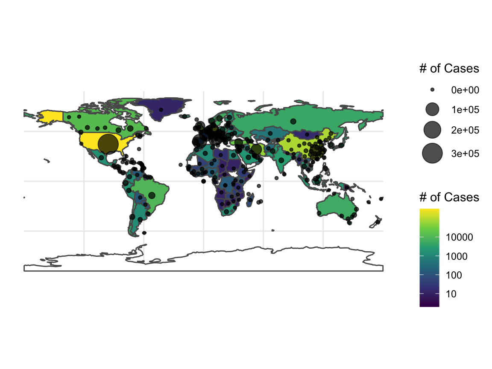
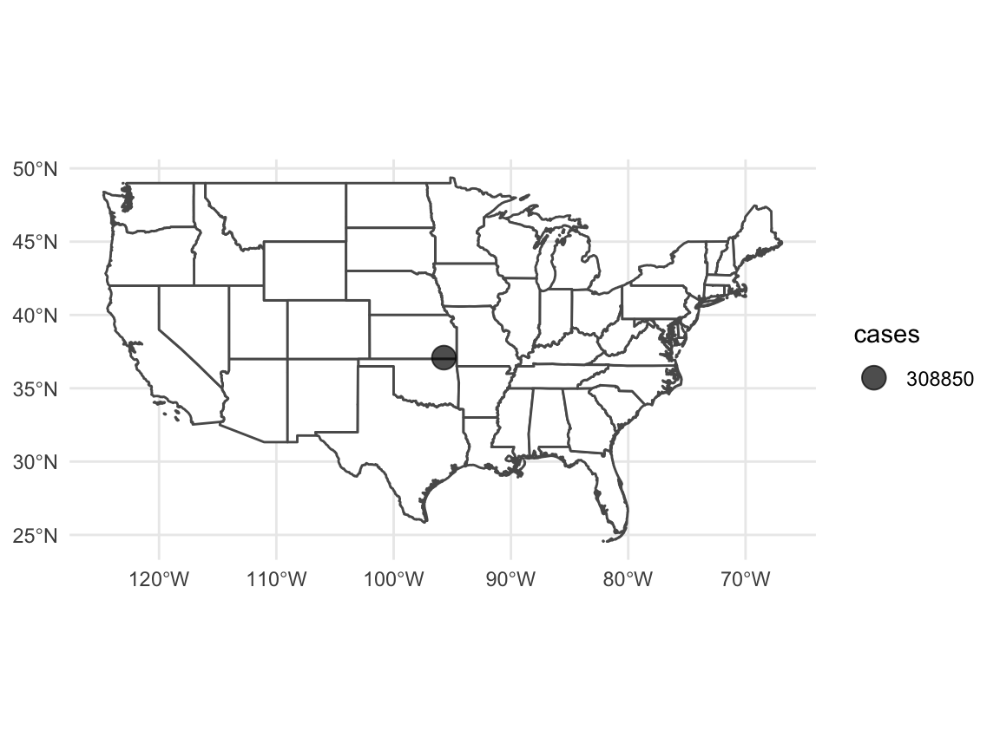
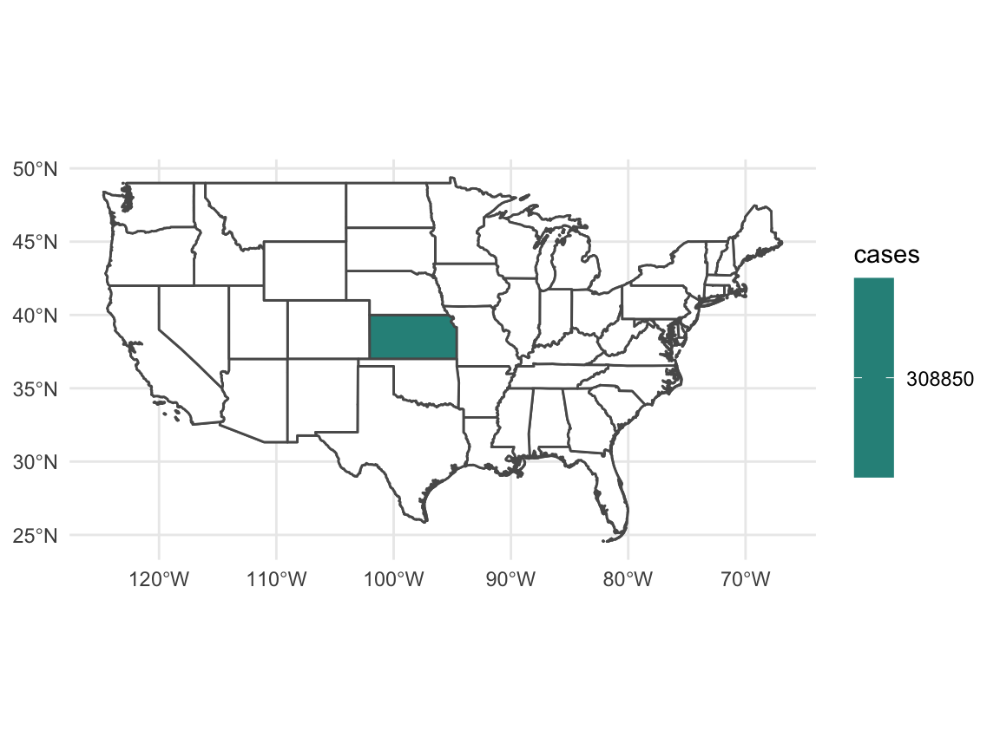

vignettes/spatial_coronavirus.Rmd
spatial_coronavirus.RmdThe coronavirus package using the rnaturalearth package for spatial information. Natural Earth provides a wealth of spatial data easily accessed via R as sf objects. Using sf, we can do a spatial join on the coronavirus data to get it synced up with the ne_countries() data from rnaturalearth.
Let’s get the data as both points for plotting as well as polygons we can fill. We will filter to confirmed cases only.
coronavirus_points <- coronavirus_sf %>%
filter(type == "confirmed")
#we need polygons to match against from rnaturalearth
worldmap <- ne_countries(returnclass = "sf") %>%
rename(nation_type = type)
coronavirus_polygons_sf <- st_join(worldmap, coronavirus_sf)
coronavirus_polys <- coronavirus_polygons_sf %>%
filter(type == "confirmed")Great! We can now see what the spatial distribution looks like simply using ggplot. Note, the polys do not contain any records with nothing in them, so we’ll need a baseline worldmap.
library(ggplot2)
ggplot(data = worldmap) +
geom_sf(fill = "white") +
geom_sf(data = coronavirus_polys,
mapping = aes(fill = log10(cases+1))) +
geom_sf(data = coronavirus_points,
mapping = aes(size = cases),
alpha = 0.7, color = "black") +
scale_fill_viridis_c(option = "D",
breaks = 0:4, labels = 10^c(0:4)) +
scale_size_continuous(range = c(1, 8)) +
labs(fill = "# of Cases", size = "# of Cases") +
theme_minimal()
Note, rnaturalearth returns lots of information, such as population size, which we might want to get percentages, etc.
What if we had wanted to just do a single country? We can manually implement the steps inside of the coronavirus_spatial ourselves quite easily. Let’s look at the continental US, for example. Rather than doing a lot of string manipulation on the Province.State column, we can use rnaturalearth with an st_join to get the info we want for grouping calculations.
usa <- ne_states(country = "United States of America", returnclass = "sf")
usa_confirmed_sf <- coronavirus_sf %>%
filter(Country.Region=="United States of America") %>%
filter(type=="confirmed") %>%
filter(!(Province.State %in% c("Hawaii", "Alaska"))) %>%
filter(!is.na(Province.State))
usa_polygons <- st_join(usa, usa_confirmed_sf) %>%
group_by(name) %>%
summarize(cases = sum(cases))%>%
filter(!(name %in% c("Hawaii", "Alaska")))%>%
filter(!is.na(name))We can now see how things are as of the data downloaded on Mon Mar 16 2020.
ggplot(data = usa %>% filter(!(name %in% c("Hawaii", "Alaska")))) +
geom_sf(fill = "white") +
geom_sf(data = usa_confirmed_sf, mapping = aes(size = cases),
alpha = 0.7, shape = 1) +
theme_minimal() +
scale_size_continuous(trans = "log10")
Or we can look at things state by state using fill.
ggplot(data = usa %>% filter(!(name %in% c("Hawaii", "Alaska")))) +
geom_sf(fill = "white") +
geom_sf(data = usa_polygons, mapping = aes(fill = cases)) +
theme_minimal() +
scale_fill_viridis_c(na.value = "white")